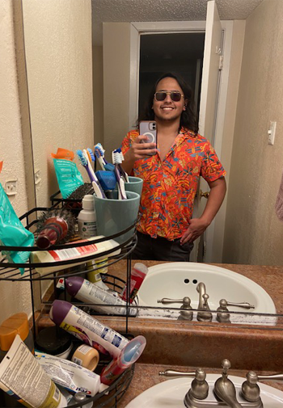

About Me
I was born on May 9th, 2005, in Irving, Texas, and have lived there for most of my life. Some of my hobbies are playing video games, mostly turned based games, and TTRPGs, like D&D, or Pathfinder. I’m also really interested in mythology, specifically Greek, and Japanese mythology.
What I've Learned
The things I've learned in this class is how to use JavaScript and Jquery to help advance my websites, and make them more complex. I learned how to create functions, using JavaScript, which can be used to create answerable quizzes using prompt() to create a variable and see if they match the correct answer which is stored in an array. I also learned about the Jquery library which can be used to make visible effects and animations on my website, like creating a shadow border on an image that disappears and reappears if the mouse hovers over said image using the hover function, or create new text if an object is clicked on using the click function.